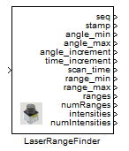

LaserRangeFinder

Robotino can be equipped with a very precise Hokuyo URG-04LX-UG01 laser scanner and distance readings from the laser range finder can be read.
Contents
Block properties
Inputs
- ComId
Outputs
- seq - The sequence number.
- stamp - Time stamp.
- angle_min - Minimum angle in radians.
- angle_max - Maximum angle in radians.
- angle_increment - Angle between two scans in radians.
- time_increment - Time between two scans in seconds.
- scan_time - Time to scan the field of view in seconds.
- range_min - Minimum range in meters.
- range_max - Maximum range in meters.
- ranges - The range measurements in meters.
- numRanges - Number of range measurements.
- intensities - The intensity measurements.
- numIntensities - Number of intensity measurements.